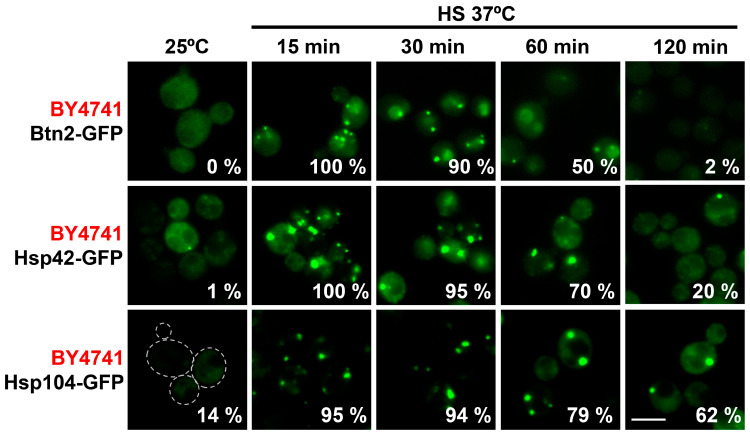

protein aggregate center
A reversible intracellular assembly of misfolded proteins and chaperones that temporarily protects heat-sensitive clients from degradation and can be disassembled when conditions permit recovery. [GO:0140453]

NCBITaxon:4932) · Susanna Boronat, Margarita Cabrera, Montserrat Vega, Jorge Alcalá, Silvia Salas-Pino, Rafael R. Daga, José Ayté, Elena Hidalgo; CC BY, via PubMed Central · CC_BY_4_0 · source: PMC PMC10342647.1 ijms-24-11202-f002 · DOI:10.3390/ijms241311202Synonyms: protein aggregate centre; PAC; protein aggregate-like center
Components
| Component | Type | Part of / acts on | Grounding | Genes | Stoichiometry | Essential | Role |
|---|---|---|---|---|---|---|---|
| heterogeneous misfolded protein cargo | Other | part of | Reviewed label only (reviewed name; no accession asserted) | UNKNOWN | Reversibly sequestered heat-sensitive protein material. Rho1.C17R-GFP and Guk1-9-GFP are engineered probes of this cargo, not invariant native subunits.
| ||
| Small heat shock protein | Protein | part of | InterPro:IPR031107 | HSP42 | UNKNOWN | Deposited chaperone class exemplified by Hsp42 in budding yeast. Joint loss of Hsp42 and Btn2 impairs reporter PAC formation or persistence; residual foci depend on reporter and strain. This combined perturbation does not establish a universal single-protein or family-wide requirement.
| |
| Btn2-type aggregase | Protein | part of | Reviewed label only (reviewed name; no accession asserted) | BTN2 | CONDITIONAL | PAC-enriched sorting factor whose formation and maintenance effects depend on substrate, genetic background and stress intensity. Results 2.2 reports that BTN2 loss blocks the Rho1 reporter PACs in W303, but other reporters/backgrounds retain foci; this is not universal essentiality.
| |
| Hsp104-type disaggregase | Protein | acts on | Reviewed label only (reviewed name; no accession asserted) | HSP104 | DISPENSABLE | Focus-associated disaggregase that supports PAC clearance during recovery and prolonged heat stress. Reporter PACs still form without Hsp104. Disappearance of fluorescent foci alone is not proof of client degradation.
|
Organism-specific protein examples
Named proteins in which each component's role was established, with the organism the evidence comes from. The component above is the taxon-agnostic family; these are the specific entries behind it.
Small heat shock protein
| Accession | Protein | Gene | Organism | Entry |
|---|---|---|---|---|
UniProtKB:Q12329 | Heat shock protein 42 | HSP42 | Saccharomyces cerevisiae S288C (NCBITaxon:559292) | REVIEWED |
Role and evidence (2 references)Reviewed reference-sequence example, not a reassignment of W303 or BY4741 experimental backgrounds to S288C. Figure 2 shows Hsp42-GFP foci in BY4741; Figure 3 tests joint BTN2/HSP42 deletion.
| ||||
Btn2-type aggregase
| Accession | Protein | Gene | Organism | Entry |
|---|---|---|---|---|
UniProtKB:P53286 | Protein BTN2 | BTN2 | Saccharomyces cerevisiae S288C (NCBITaxon:559292) | REVIEWED |
Role and evidence (2 references)Reviewed reference-sequence example, not a reassignment of W303 or BY4741 experimental backgrounds to S288C. Figure 2 shows Btn2-GFP foci; Results 2.2 separates single-deletion observations from the double-deletion assays in Figure 3.
| ||||
Hsp104-type disaggregase
| Accession | Protein | Gene | Organism | Entry |
|---|---|---|---|---|
UniProtKB:P31539 | Heat shock protein 104 | HSP104 | Saccharomyces cerevisiae S288C (NCBITaxon:559292) | REVIEWED |
Role and evidence (2 references)Reviewed reference-sequence example, not a reassignment of W303 or BY4741 experimental backgrounds to S288C. Figures 2 and 4 show focus association and separate PAC formation from Hsp104-dependent clearance.
| ||||
Canonical examples
NCBITaxon:4932Saccharomyces cerevisiae — W303 and BY4741 derivatives form reporter PACs at 37 C, with different persistence and genetic requirements. Figure 2 images BY4741-derived GFP-tagged chaperones. These are experimental examples, not clade-wide prevalence. [DOI:10.3390/ijms241311202]NCBITaxon:4896Schizosaccharomyces pombe — Figure 1c includes strain 972 in the same Rho1.C17R-GFP heat-shock comparison. Mild-stress fission-yeast PAC localization is not assumed identical to budding-yeast nuclear and cytoplasmic foci. [DOI:10.3390/ijms241311202]NCBITaxon:559292Saccharomyces cerevisiae S288C — Reference-sequence taxon for the reviewed protein examples; not a reassignment of every source assay or imaged cell to this strain. [UniProtKB:Q12329]
Functions
- temporary sequestration of heat-sensitive protein clients — Collects misfolding-prone proteins in heat-induced foci. The same reporters persist differently in fission yeast, W303 and BY4741; a fixed lifetime is not part of the structure identity.
DOI:10.3390/ijms241311202Results 2.1 and Figure 1 compare reporter PAC formation and persistence.
- postponement of client degradation — PAC deposition can delay degradation of the tested misfolding reporters. Recovery permits disassembly, whereas prolonged heat can be followed by turnover. The study's folding-versus-degradation model is not proof that every endogenous client follows one fate.
DOI:10.3390/ijms241311202Results 2.3-2.4 and Figures 4-6 combine deletion, translation inhibition and immunoblot measurements; Figure 6d summarizes the proposed routing model.
Mechanism graphs
Reporter PAC formation during mild heat stress (ASSEMBLY)
| Subject | Predicate | Object | Evidence |
|---|---|---|---|
| Temperature shift to 37 C | induces | protein aggregate center |
|
| Joint BTN2 and HSP42 deletion | impairs | protein aggregate center |
|
| Cycloheximide present during 37 C induction | blocks | protein aggregate center |
|
Perturbations of PAC deposition and reporter turnover (FUNCTION)
| Subject | Predicate | Object | Evidence |
|---|---|---|---|
| Joint BTN2 and HSP42 deletion | accelerates | Misfolding-reporter degradation |
|
| Cycloheximide at 37 C | accelerates | Misfolding-reporter degradation |
|
Hsp104-dependent PAC clearance (DISASSEMBLY)
| Subject | Predicate | Object | Evidence |
|---|---|---|---|
| Return to 25 C after PAC assembly, with CHX | permits | Reporter PAC clearance during recovery |
|
| HSP104 deletion | impairs | Reporter PAC clearance during recovery |
|
| HSP104 deletion | delays | PAC clearance during prolonged 37 C stress |
|
| HSP104 deletion | delays | Rho1.C17R-GFP turnover during prolonged 37 C stress |
|
Discussions
- INTERPRETATION (OPEN): Resolve the operational overlap of PAC with INQ and CytoQ without forcing exact synonymy. The same protein-quality-control literature uses different names and experimental boundaries.
- CURATION_TODO (OPEN): Resolve exact family grounding for Btn2-type, Hsp104-type and heterogeneous cargo classes. Domains, broad superfamilies and variable cargo cannot be made exact component identities.
- INTERPRETATION (RESOLVED): Keep reporters and upstream or turnover factors separate from demonstrated residents. Genetic effects do not alone demonstrate membership in the assembled structure.
- INTERPRETATION (RESOLVED): Preserve temperature, strain, inhibitor and readout boundaries. Reporter foci, protein abundance, refolding and degradation are different measurements.
- CURATION_TODO (OPEN): Extend the bounded component list after inspecting the defining paper and supplemental localization data. The curated core is not a complete native PAC inventory.
- CURATION_TODO (OPEN): Resolve native client inventories, prevalence and physical properties with structure-specific evidence. Two yeast models and reporter assays do not establish pan-fungal or pan-eukaryotic distribution.
Datasets
- Cabrera et al. PAC manuscript dataset, version 2 (
DOI:10.17632/z3hvg9wtvg.2) · OTHER · OTHERMetadata-only link. Native version-2 page gives publication date 2023-03-21, contributor Margarita Cabrera and CC BY 4.0. File manifest and raw archives were not inspected; no file count, sample count, assay inventory or reanalysis finding is asserted.
https://data.mendeley.com/datasets/z3hvg9wtvg/2Native version-2 landing page verifies the dataset identity, date, contributor, publication association and licence.
Evidence
GO:0140453Active cellular-component identity verified through native QuickGO; definition paraphrased, and GO's broad PAC abbreviation scope retained.GO:0043232Native QuickGO lists GO:0140453 as an is_a child of intracellular membraneless organelle; no nuclear or cytoplasmic parthood is forced.DOI:10.3390/ijms241311202Boronat et al. (2023), PMID 37446379, PMC10342647.1. Native metadata/JATS, all main Results, Discussion, Methods and seven figure captions read. Figure 2 pixels inspected. Supplemental figures/tables and raw data were not independently inspected.DOI:10.1016/j.celrep.2020.01.077Cabrera et al. (2020), PMID 32075773. PubMed abstract and bibliographic metadata read. DOI/Cell PDF routes failed and the publisher full-text route returned 403; NCBI reports no PMC copy, not absence of the paper. Detailed mechanistic claims here rely on the readable 2023 study, not an inferred reading of the 2020 full text.
Curation history
2026-10-05T10:53:12Zcodex · CREATED_RECORD — Scaffolded by scripts/new_record.py2026-10-05T10:55:40Zcodex · EXPANDED_RECORD — Added bounded GO identity, four component classes, three reference proteins, three intervention graphs, dataset metadata, source-limit discussions and an inspected CC BY 4.0 figure.
Source: data/structures/inclusion/protein_aggregate_center.yaml